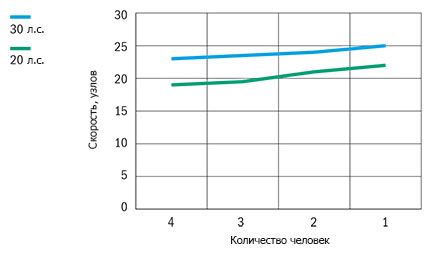

Катер Buster S/Scc (Бустер S/Scc)
Buster S (Бустер S) и Buster Scc (Бустер Scc) – проворные лодки с консолями управления для рыбалки и перевозки грузов. Buster S (Бустер S), и её собрат Buster Scс (Бустер Scc), оснащённый центральной консолью отлично подходят для работы, отдыха и рыбалки. Благодаря идеальной форме корпуса, лодки обладают лёгким скольжением при использовании экономичного 20-30-ти сильного подвесного мотора и удобны при гребле на вёслах. Лодки предназначены для тех, кто ценит надёжность и стабильность без дополнительных излишеств.
Несмотря на свой небольшой размер, лодки достаточно остойчивые и просторные. Внутреннее пространство Buster Scc (Бустер Scc) предлагает ощущение большой лодки. Модель Buster S (Бустер S) поставляется с центральным поперечным сиденьем. Дополнительный комфорт обеспечивают съёмные, мягкие подушки, дополнительное оборудование. На обеих лодках функциональные консоли, используемые на более крупных моделях Buster. Лодкой Buster Scc (Бустер Scc) можно управлять стоя, что облегчает передвижение в особо узких местах.
Лодки Buster S (Бустер S) и Scc – всепогодные транспортные средства. На обеих моделях комфортно путешествовать в любую погоду, благодаря удобному ходовому тенту. Безопасность багажа обеспечивают закрывающиеся багажные отсеки.
Технические характеристики катера:
| Параметр | Buster S/Scc |
|
Длина |
4.61 м |
|
Ширина |
1.88 м |
|
Масса (Без двигателя) |
259 кг(S)/280 кг(Scc) |
|
Вместимость |
4 человека |
|
Рекоменд. мощность двигателя |
20 - 30 л.с. |
|
Осадка при полной нагрузке |
0,19 м |
|
Максимальная скорость |
25 узлов |
|
V-угол дна |
15° |
| График скорости | |
|  | |
Стандартное оборудование:
- Рулевое управление
- Консоль управления, ветровое стекло
- Сиденье-бокс 45л. (Scc)
- Съёмное центральное сиденье (S)
- Чехол для аккумулятора
- Центральный выключатель с автоматическими предохранителями
- Автоматическая трюмная помпа
- Мачта, съёмная
- Электрический разъём 12V
Дополнительное оборудование:
- Комплект мягких подушек
- Тент стояночный (Scc)
- Ходовой/стояночный тент (S)
- Носовой релинг, левый
- Подставка для крепления датчика эхолота
- Компас
- Система запирания(трос, замки Abloy, система запирания одним ключом)
- Мягкая подушка, заднее сиденье
- Мягкая подушка, спинка заднего сиденья, правая
- Мягкая подушка, спинка заднего сиденья, левая
- Мягкая подушка, сиденье-бокс, 45 л.
- Мягкая подушка, переднее сиденье
- Мягкая подушка, центральное сиденье (S)
{kind=link}
{kind=link}
{kind=link}
{kind=link}
{kind=link}
{kind=link}
{kind=link}
{kind=link}
{kind=link}
{kind=link}
{kind=link}